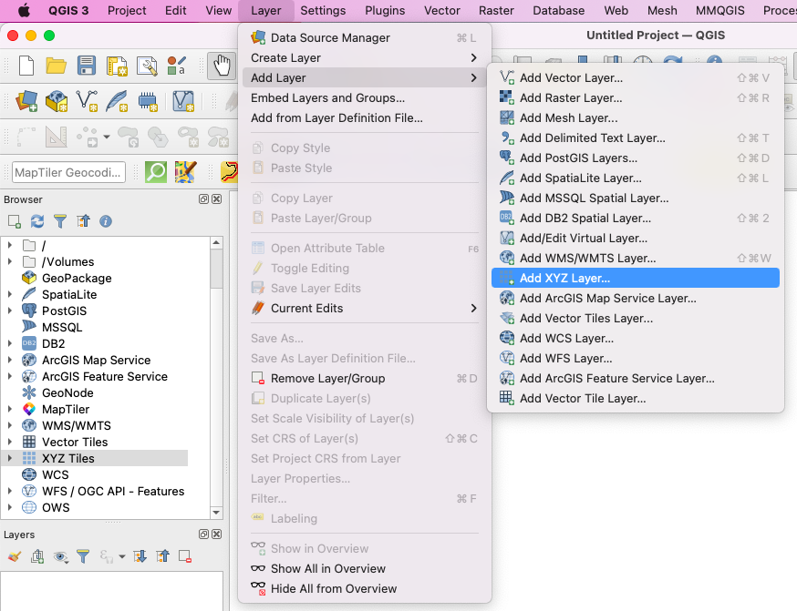
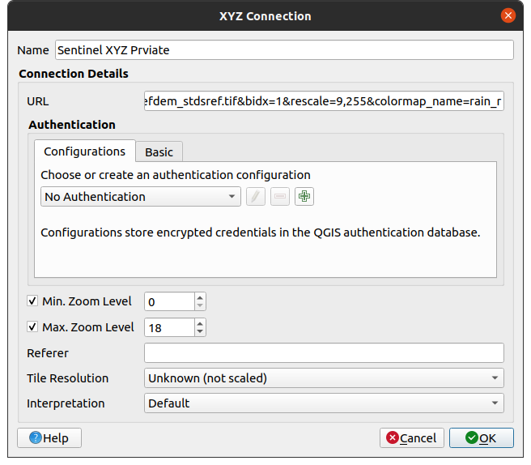
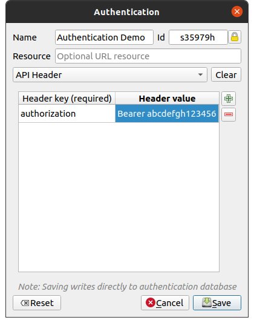
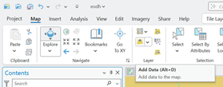
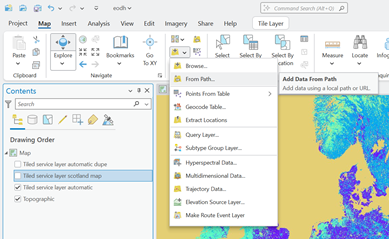
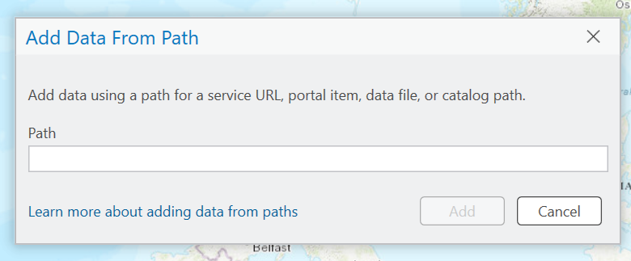
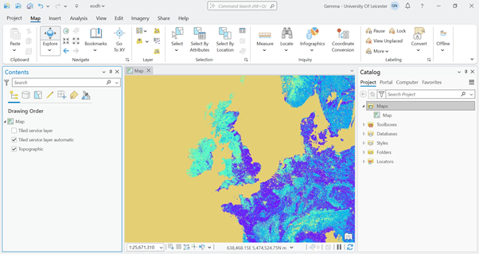

TiTiler and third-party tools
TiTiler’s outputs are standard web map images, so many third-party tools can work with them.
QGIS Desktop
You can add layers from the EO DataHub directly into QGIS. For public raster data, we recommend using the WMTS endpoint when available. For individual files, you can use an XYZ Tile connection.
We support many different datatypes (GeoTIFF, COG, Kerchunk, ZARR and NetCDF). To begin, please ensure that the format of what you want to visualise corresponds with one of those file formats.
You will then need to use our platform-hosted TiTiler to generate an XYZ Tile URL. You can use this notebook to learn how to construct the URLs. Alternatively, you can refer to the official TiTiler documentation.
Adding as an XYZ Layer (for single COG files)
In QGIS, navigate to Layer -> Add Layer -> Add XYZ Layer.

To ensure compatibility, it's best to create a true color RGB image by specifying three bands (for natural color in a Sentinel-2 image).
Enter a URL formatted like the example below. Notice it uses bidx=4&bidx=3&bidx=2 to select the Red, Green, and Blue bands and a color_formula to enhance the image.
https://eodatahub.org.uk/titiler/core/cog/tiles/WebMercatorQuad/{z}/{x}/{y}?url=https://dap.ceda.ac.uk/neodc/sentinel_ard/data/sentinel_2/2025/05/12/S2C_20250512_latn590lonw0055_T30VUL_ORB023_20250512170944_utm30n_osgb_vmsk_sharp_rad_srefdem_stdsref.tif&bidx=1&color_formula=Gamma%20RGB%206%20Saturation%200.8%20Sigmoidal%20RGB%2025%200.35&bidx=2&bidx=3

If you are serving data from your private Workspace, then:
- Add in your Authentication Configuration by clicking the green arrow next to Configurations.
- Give it a name and select API Header from the dropdown.
- As the Header key: authorization
- As the Header value: Bearer
Tip
If you don't have an API token, visit the Workspaces -> Credentials -> New API Token to generate a workspace-scoped token.

Save the dialog boxes and add the layer which should now be serving the data directly from the platform.
ArcGIS Pro
The following guide walks through how to pull your Hub data into ArcGIS Pro via TiTiler.
Within your ArcGIS Pro map project, navigate to the Layer group in the Map tab, and find Add Data.

From the dropdown menu, select From Path.

The Add Data From Path pop out will appear. Input your URL into the text box. You can use the following example link to try this out with some open land cover data.

https://eodatahub.org.uk/titiler/core/cog/tiles/WebMercatorQuad/{z}/{x}/{y}?scale=1&url=https://dap.ceda.ac.uk/neodc/esacci/land_cover/data/land_cover_maps/v2.0.7/ESACCI-LC-L4-LCCS-Map-300m-P1Y-2015-v2.0.7.tif&bidx=1&rescale=0%2C300&colormap_name=rainbow
Leave the Service Type as Automatic, and click Add. You shouldn’t need to add any Custom Request Parameters. Your image should then be visualised as a layer within the Contents panel. If the data doesn’t appear on the map immediately, the image could be taking a while to render. Try Zooming in and out on the map to trigger the rendering of the data, and soon your image should be loaded into the Map pane.

Leaflet / OpenLayers (Web Mapping Libraries)
If you’re building a custom web app, you can use Leaflet’s L.TileLayer with the URL template pointing to DataHub’s TiTiler. For example:
L.tileLayer('https://eodatahub.org.uk/titiler/cog/tiles/{z}/{x}/{y}?url=<...>&rescale=...').addTo(map);
This would integrate your dataset as a layer on a Leaflet map. OpenLayers and MapLibre GL have similar capabilities for XYZ tiles. Remember to include any required parameters (like API key, band selection, etc.) in the URL template.
Python API usage
If you want to retrieve a tile or image programmatically (say in a Python notebook for analysis), you can use the requests library to call the TiTiler endpoint.
You can use this Notebook for reference: https://github.com/EO-DataHub/eodh-training/blob/main/presentations/Workshop/3_202502_workshop_DataVis.ipynb
For example:
import requests
TITILER_PREVIEW_URL = f'https://eodatahub.org.uk/titiler/core/cog/preview'
TITILER_PREVIEW_PARAMS = {
'url': WORKFLOW_OUTPUT_ASSET,
'bidx': 1,
'rescale': '9,255',
'colormap_name': 'rain_r'
}
resp = requests.get(url, params=params)
with open("preview.jpg", "wb") as f:
f.write(resp.content)
This would download a preview JPEG of the specified image. The /preview endpoint returns a single composite image showing the whole dataset area. If you want tiles, you’d use the /tiles/... URL as shown in earlier examples.
Using Folium
You can actually stream XYZ tiles directly from Python using Folium within a notebook. For example, if you want to stream a COG Asset you could generate one like so:
'''py COG_PREVIEW_PARAMS = { 'url': sentinel2_ard_cog_asset.href, 'bidx': 1, 'rescale': '9,255', 'colormap_name': 'rain_r' }
COG_OGC_URL = 'https://eodatahub.org.uk/titiler/core/cog/tiles/WebMercatorQuad/{z}/{x}/{y}'
COG_XYZ = COG_OGC_URL + '?' + '&'.join([f'{k}={v}' for k, v in COG_PREVIEW_PARAMS.items()])
Create the Folium Map
m = folium.Map(location=[54.5, -4.5], zoom_start=6)
Add the TiTiler layer
folium.raster_layers.TileLayer( tiles=COG_XYZ, attr="TiTiler", name="Sentinel 2 ARD Scene", overlay=True ).add_to(m)
Add a layer control
folium.LayerControl().add_to(m)
Display the map
m
Similarly for Multi-Dimensional Datasets (ZARR, NetCDF, Kerchunk), the only difference would be a slight adjustment to the URLS, see:
```py
XARRAY_PARAMS = {
'url': cmip6_kerchunk_asset.href,
'variable': 'rsus',
'rescale': '-50,100',
'colormap_name': 'plasma',
'reference' : 'true'
}
XARRAY_OGC_URL = 'https://eodatahub.org.uk/titiler/xarray/tiles/WebMercatorQuad/{z}/{x}/{y}'
XARRAY_XYZ = XARRAY_OGC_URL + '?' + '&'.join([f'{k}={v}' for k, v in XARRAY_PARAMS.items()])
# Create the Folium Map
m = folium.Map(location=[54.5, -4.5], zoom_start=6)
# Add the TiTiler layer
folium.raster_layers.TileLayer(
tiles=XARRAY_XYZ ,
attr="TiTiler",
name="Sentinel 2 ARD Scene",
overlay=True
).add_to(m)
# Add a layer control
folium.LayerControl().add_to(m)
# Display the map
m
If you are serving Private datasets from a Workspace, then make sure to include the DataHub API key you got from the Workspaces like so:
headers={'Authorization': f'Bearer {WORKSPACE_API_KEY}'}